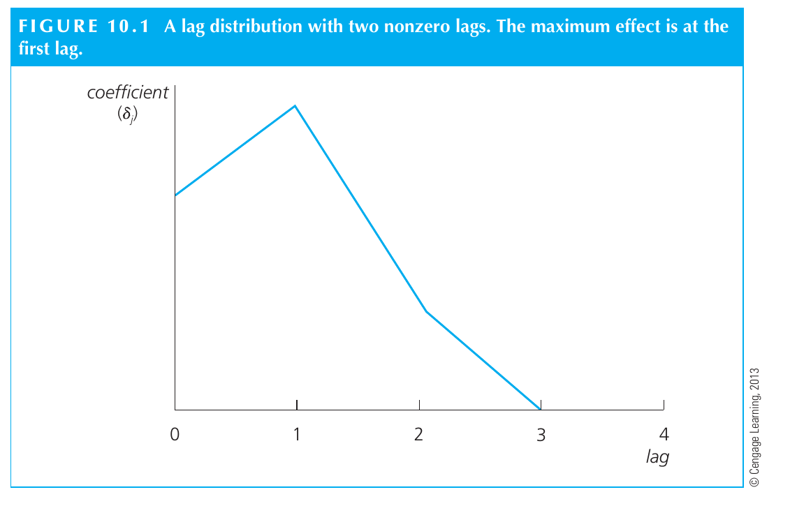

Derive finite distributed lag responses and interpret long-run precision
Useful first: Derive time-series OLS unbiasedness and diagnose feedback against strict exogeneity
Lesson outline
- 02IntroductionSee the main question, learning objectives and prerequisites.
- 03Key definitions and conceptsGet familiar with the important terms and notation.
- 04Static and finite distributed lag modelsDoes a change in an explanatory variable affect the outcome immediately, over several later periods, or both?
- 05Worked exampleFollow a complete application of the reasoning.
- 06Practise the reasoningWork through written tasks, with optional support and solutions.
- 07Check your reasoning: an offline quizCheck your choices and see feedback without a connection.
- 08Check your understandingReview the key distinctions and check what you can explain.
- 09Test yourself laterTry another prepared question before rereading.
- 10SourcesFind the materials and limits behind the lesson.
Introduction
In this lesson, derive finite distributed lag responses and interpret long-run precision.
2.1 What you’ll learn
- Derive pulse/step response paths, long-run reparameterisation and variance-of-sum reasoning for a supplied finite-lag model.
2.2 Before you begin
Check the foundations
Does an intervention dummy with significant slope prove causal policy effect?
Reveal foundation explanation
No; specification and exogeneity/identification need support beyond the fitted association. Otherwise
Key definitions and concepts
- Pulse response: The path after a one-period unit change in the input.
- Step response: The path after a maintained unit input change.
- Long-run propensity: The sum of finite distributed-lag coefficients.
Static and finite distributed lag models
Does a change in an explanatory variable affect the outcome immediately, over several later periods, or both? A static time-series model represents a contemporaneous relationship.
A finite distributed lag (FDL) model lets the adjustment unfold over a specified number of periods. Distinguishing a temporary pulse from a permanent change is essential: a coefficient describes the response at one lag, while a sum of coefficients describes the eventual response to a maintained change.
Back to Econometrics II — Week 2. These specifications can be estimated by OLS, but (strict exogeneity and unbiasedness; variance and exact inference) explains the assumptions needed for unbiasedness and inference. Model coefficients are not automatically causal effects.
4.1 A static contemporaneous model
The lecture's static specification is
Here \(z_t\) is the explanatory variable at the same date as outcome \(y_t\), and \(u_t\) collects other influences. The coefficients are time-invariant.
Holding the disturbance unchanged, a change in \(z\) gives \(\Delta y_t=\beta_1\Delta z_t\); the contemporaneous slope has units of outcome per unit of \(z\).
This is the source's comparison with \(\Delta u_t=0\). It does not say that real observed outcomes change only because of \(z\), or that disturbances necessarily stay fixed between successive calendar dates.
The source's demand example is \(D_t=\beta_0+\beta_1Price_t+u_t\), a same-period tradeoff between consumption and price. The specification assumes that the intercept and slope do not change over time.
Whether price is exogenous is an additional question: writing a demand equation does not establish that price changes independently of unobserved demand influences. This qualification connects the example to the source's TS2 requirement. ;
4.2 An FDL model spreads adjustment across dates
For lag order \(q\), write
The lagged variable \(z_{t-j}\) is the value \(j\) periods earlier. There are \(q\) lagged values plus the current value, so an FDL of order two has three slope coefficients.
Each \(\delta_j\) has units of \(y\) per unit of \(z\) and describes the model's date-\(t\) response to a change in the value of \(z\) at date \(t-j\), holding the other included values and disturbances fixed. The period is set by data frequency: one lag in monthly data means one month.
Wooldridge likewise treats the static model as current-value-only and the FDL as a current value plus a finite set of earlier values. Its fertility example makes the lag rationale explicit: biological and behavioral decisions can delay the response of births to the tax value of a child.
Constructing lags requires earlier observations. If the available raw series begins at date 1 and no earlier \(z\) is supplied, a model with \(q\) lags can first use date \(q+1\). Its estimation sample length is the number of usable rows, not automatically the original series length. This is an Bookkeeping implication of the displayed indices, relevant when using \(T-k-1\) degrees of freedom from the OLS note. ;
4.3 A temporary pulse and a permanent step
Derivation of the source's response interpretation. Compare two regressor paths that share the same disturbance path and all other model inputs. With a one-unit temporary pulse at date \(s\), \(\Delta z_s=1\) and \(\Delta z_t=0\) at all other dates. Substituting in the FDL gives
The impact propensity is \(\delta_0\), the immediate response. The date-\(s+1\) response is \(\delta_1\), and so on. From \(q+1\) periods onward the pulse has left every included regressor position, so it has no further response in this finite-lag specification. This conclusion is a model implication, not a guarantee about an economic system whose effects might last longer than the chosen lag order.
For a permanent one-unit increase starting at \(s\), \(\Delta z_t=1\) for every \(t\ge s\). At the first date only the current regressor has changed. One period later both the current and first-lag regressor have changed. Continuing this substitution gives
The long-run propensity (LRP) is the final level difference once all included lags carry the maintained change. It is not the effect in the first period, nor an estimate of a percentage change unless the model's units or transformations justify that interpretation.
For order two, the contrast is:
| Period relative to change | Temporary one-unit pulse | Permanent one-unit increase |
|---|---|---|
| \(s\) | \(\delta_0\) | \(\delta_0\) |
| \(s+1\) | \(\delta_1\) | \(\delta_0+\delta_1\) |
| \(s+2\) | \(\delta_2\) | \(\delta_0+\delta_1+\delta_2\) |
| \(s+3\) and later | \(0\) | \(\delta_0+\delta_1+\delta_2\) |
Hypothetical table derived from the order-two equation and temporary/permanent comparisons on Lecture 2, PDF p. 23. For example, hypothetical coefficients \((2,0.5,-0.5)\) give pulse responses \((2,0.5,-0.5,0,\ldots)\) and step responses \((2,2.5,2,2,\ldots)\). A negative later response can offset part of an initial increase, so a large impact propensity does not require an equally large long-run propensity.
These numbers are an illustration, not an estimated course result.

Source Figure 10.1: an illustrative lag distribution, with the largest pulse response at lag 1 and a zero response after lag 2. The horizontal axis is lag, and the vertical axis is a coefficient, not a measured outcome series. The diagram is schematic and contains no numerical coefficient estimates.
The textbook's explicit substitutions for a temporary pulse and maintained step give the same response sequences as the table above. Whether an economic response really ends after the chosen number of lags remains an empirical specification question. ;
4.4 A static model is a special case, with a source caveat
Setting only the lag coefficients \(\delta_1,\ldots,\delta_q\) to zero leaves \(y_t=\alpha_0+\delta_0z_t+u_t\), the static model. The arrows on p. 24 show zeros under the lagged terms.
Its accompanying text, however, says to set \(\delta_0,\delta_1,\ldots,\delta_q\) to zero. Taken literally, that also removes the contemporaneous regressor and leaves an intercept-only model.
The static-model definition on p. 22 and the p. 24 arrows support retaining \(\delta_0\); the inconsistent source wording is explicitly recorded here.
Wooldridge states the special case unambiguously by setting \(\delta_1,\ldots,\delta_q\) to zero while retaining the current-value coefficient. ;
Values of \(z\) at nearby dates are often strongly correlated. This can make the individual \(\delta_j\) estimates imprecise, because there is little independent variation to distinguish their contributions.
Substantial lag correlation is imperfect multicollinearity; exact dependence violates full rank.
The distinction follows the multiple-regression variance denominator \(SST_j(1-R_j^2)\) in the OLS note. Adding lags is therefore an economic modeling choice with a precision cost, not a mechanical way to improve identification. ;
4.5 Precision of the long-run sum
Imprecise individual lag estimates do not imply that their sum is equally imprecise. In the textbook's annual fertility illustration (United States, 1913–1984; 70 usable rows after two lags), the coefficients on current and lagged real personal-exemption values are approximately \(0.073\), \(-0.0058\), and \(0.034\).
Their individual standard errors are large, but their estimated sum is about \(0.101\) births per 1,000 women of childbearing age per dollar, with standard error \(0.030\). The source reports a 95% interval of approximately \(0.041\) to \(0.160\), conditional on its maintained model.
This is a textbook result, not a recomputed result from a supplied dataset. ;
To see why separate standard errors are insufficient, an Explanation of the variance-of-a-sum identity gives
The coefficient covariances are needed. The book obtains the sum's standard error by reparameterizing an order-two model with \(\theta=\delta_0+\delta_1+\delta_2\):
This follows by substituting \(\delta_0=\theta-\delta_1-\delta_2\). A regression on these transformed columns estimates the same model, with the coefficient on \(z_t\) directly equal to the LRP and its reported standard error attached to that sum. ;
4.6 The EET restaurant-price example
The lecture asks whether electronic sales reporting (EET), introduced to reduce tax evasion, affects restaurant prices. It proposes monthly restaurant-price-index data from the Czech Statistical Office and a four-lag model:
The source gives no dataset, coefficient estimates, exact variable coding, or identification design. Conditional coding explanation: if \(EET_t\) is a zero/one indicator for an active regime, a maintained switch from zero to one has immediate model difference \(\delta_0\) and final difference \(\delta_0+\cdots+\delta_4\), in price-index points. Other influences on prices remain in \(u_t\), so this response becomes a causal policy effect only with a defensible exogeneity/specification argument.
A fitted intervention model alone cannot establish that argument. ;
A price index needs a base period and base value: an index-point change is different from a percentage change or a currency-unit change. For positive index values, the percentage change from date \(a\) to \(b\) is \(100(I_b/I_a-1)\).
The slide does not specify the restaurant index's base. This brief index clarification is supplied by the textbook and prevents treating the displayed coefficient as a price change in crowns or as a percentage by default.
Source-context boundary: p. 25 states introduction in December 2016, cancellation on January 1, 2023, and reintroduction on January 1, 2027. These are the lecture's policy-context statements;
their current legal/calendar accuracy was not independently verified against an authorized external source. They must not be used as confirmed current policy facts.
The econometric exercise does not require accepting the claimed future date. No external media or statistical-office link was opened during this ingestion.
4.7 A visual motivation for lagged response

Original embedded image from Lecture 2, PDF p. 35. Upper panel: daily newly confirmed COVID-19 cases per million people in Czechia; lower panel: the number of patients in hospital. Both cover dates in early 2022. The upper panel explicitly warns that limited testing means confirmed cases undercount infections; the original source/credit text is preserved.
The source places these plots under “Lagged effects.” The waves appear at different stages, motivating a model in which an explanatory series can precede an outcome response. The units differ, and hospital occupancy is not a count of newly admitted patients;
comparing peak heights is therefore not a response coefficient. The image supplies neither an estimated lag length nor an FDL fit, and its timing alone does not identify causation.
It illustrates why immediate-only specifications may miss dynamics.
4.8 What to retain
A static model contains the current explanatory variable; an FDL additionally contains its lags.
Read \(\delta_j\) as the date-\(j\) response to a temporary unit pulse, and read their sum as the final response to a permanent unit step, under the model and held-fixed disturbance comparison. Strong correlation between lags affects precision;
assumptions about disturbances determine whether these modeled comparisons support unbiased or causal interpretation.
Worked example
Prompt: Hypothetical order-two FDL \(y_{t}=\alpha+2z_{t}+0.5z_{t-1}+-0.5z_{t-2}+u_{t}\), outcome in index points, \(z\) a \(0\) or \(1\) regime indicator; raw series has \(24\) rows and no earlier \(z\).
Holding other inputs/disturbance path fixed, derive pulse and maintained step responses at \(h=0,1,2,3\), impact and long-run propensity, and usable sample size. Explain which coefficients vanish for a static model.
Derive the LRP reparameterisation and why separate coefficient SEs cannot determine its \(\mathrm{SE}\). Given every coefficient variance \(0.04\) and each pair covariance \(-0.01\), calculate variance of their sum.
Interpret lag correlation and whether the path alone identifies a causal/current policy effect or the source’s visual lag length.
Steps and interpretation: One-unit pulse response \((2,0.5,-0.5,0)\); step \((2,2.5,2.0,2.0)\);
impact \(\delta_0=2\), \(LRP=\delta_0+\delta_1+\delta_2 = 2.0\) index points per unit regime. Substitution explains each lag entering the step versus one changing slot for pulse.
Usable dates \(3\)–\(24\), giving \(22\) rows. Static sets \(\delta_1=\delta_2=0\), retains \(\delta_0\);
the deck's prose zero-list incorrectly includes current coefficient. With \(\theta=\sum_j\delta_j\), substitute \(\delta_0=\theta-\delta_1-\delta_2\) to obtain \(y=\alpha+\theta z_t+\delta_1(z_{t-1}-z_t)+\delta_2(z_{t-2}-z_t)+u\).
Covariance matters: \(\operatorname{Var}(\hat\theta) = \sum_j\operatorname{Var}(\hat\delta_j)+2\sum_{j<k}\operatorname{Cov}(\hat\delta_j,\hat\delta_k) = 0.12+-0.06=0.060000\); \(\mathrm{SE}=\sqrt{0.060000}\), not sum of SEs. Imperfect lag collinearity reduces independent variation and may inflate individual variances;
exact collinearity loses rank. A well-estimated sum may coexist with imprecise individual slopes.
These model paths need exogeneity/specification for causal claims; indicator coefficients are index points, not percentages/currency by default.
No unprovided EET dataset/current legal fact or estimated lag length from case/hospital plots is inferred.
Practise the reasoning
Write your reasoning before revealing an explanation. Begin with support, then apply the ideas to another situation.
6.1 Written exercise 1
Hypothetical order-two FDL \(y_{t}=\alpha+1z_{t}+2z_{t-1}+-1z_{t-2}+u_{t}\), outcome in index points, \(z\) a \(0\) or \(1\) regime indicator;
Solve the following:
- raw series has \(30\) rows and no earlier \(z\).
- Holding other inputs/disturbance path fixed, derive pulse and maintained step responses at \(h=0,1,2,3\), impact and long-run propensity, and usable sample size.
- Explain which coefficients vanish for a static model.
- Derive the LRP reparameterisation and why separate coefficient SEs cannot determine its \(\mathrm{SE}\).
- Given every coefficient variance \(0.09\) and each pair covariance \(-0.02\), calculate variance of their sum.
- Interpret lag correlation and whether the path alone identifies a causal/current policy effect or the source’s visual lag length.
Show a hint
Pause before calculating or choosing an explanation:
- What quantities, actors or outcomes are being compared? Write their roles, units and dates beside them.
- Which condition decides whether the relationship applies? Check the relevant definition before using a formula or classifying the case.
- What would have to remain fixed for your comparison to be meaningful? Work through one link in the reasoning at a time.
- How could you check the direction, boundary case or alternative explanation before stating your conclusion?
A local draft for your own study.
Reveal explanation
Key: One-unit pulse response \((1,2,-1,0)\); step \((1,3,2,2)\);
impact \(\delta_0=1\), \(LRP=\delta_0+\delta_1+\delta_2 = 2\) index points per unit regime. Substitution explains each lag entering the step versus one changing slot for pulse.
Usable dates \(3\)–\(30\), giving \(28\) rows. Static sets \(\delta_1=\delta_2=0\), retains \(\delta_0\);
the deck's prose zero-list incorrectly includes current coefficient. With \(\theta=\sum_j\delta_j\), substitute \(\delta_0=\theta-\delta_1-\delta_2\) to obtain \(y=\alpha+\theta z_t+\delta_1(z_{t-1}-z_t)+\delta_2(z_{t-2}-z_t)+u\).
Covariance matters: \(\operatorname{Var}(\hat\theta) = \sum_j\operatorname{Var}(\hat\delta_j)+2\sum_{j<k}\operatorname{Cov}(\hat\delta_j,\hat\delta_k) = 0.27+-0.12=0.150000\); \(\mathrm{SE}=\sqrt{0.150000}\), not sum of SEs. Imperfect lag collinearity reduces independent variation and may inflate individual variances;
exact collinearity loses rank. A well-estimated sum may coexist with imprecise individual slopes.
These model paths need exogeneity/specification for causal claims; indicator coefficients are index points, not percentages/currency by default.
No unprovided EET dataset/current legal fact or estimated lag length from case/hospital plots is inferred.
6.2 Written exercise 2
Hypothetical order-two FDL \(y_{t}=\alpha+3z_{t}+-1z_{t-1}+0.5z_{t-2}+u_{t}\), outcome in index points, \(z\) a \(0\) or \(1\) regime indicator;
Solve the following:
- raw series has \(18\) rows and no earlier \(z\).
- Holding other inputs/disturbance path fixed, derive pulse and maintained step responses at \(h=0,1,2,3\), impact and long-run propensity, and usable sample size.
- Explain which coefficients vanish for a static model.
- Derive the LRP reparameterisation and why separate coefficient SEs cannot determine its \(\mathrm{SE}\).
- Given every coefficient variance \(0.16\) and each pair covariance \(-0.03\), calculate variance of their sum.
- Interpret lag correlation and whether the path alone identifies a causal/current policy effect or the source’s visual lag length.
A local draft for your own study.
Reveal explanation
Explanation: One-unit pulse response \((3,-1,0.5,0)\); step \((3,2,2.5,2.5)\);
impact \(\delta_0=3\), \(LRP=\delta_0+\delta_1+\delta_2 = 2.5\) index points per unit regime. Substitution explains each lag entering the step versus one changing slot for pulse.
Usable dates \(3\)–\(18\), giving \(16\) rows. Static sets \(\delta_1=\delta_2=0\), retains \(\delta_0\);
the deck's prose zero-list incorrectly includes current coefficient. With \(\theta=\sum_j\delta_j\), substitute \(\delta_0=\theta-\delta_1-\delta_2\) to obtain \(y=\alpha+\theta z_t+\delta_1(z_{t-1}-z_t)+\delta_2(z_{t-2}-z_t)+u\).
Covariance matters: \(\operatorname{Var}(\hat\theta) = \sum_j\operatorname{Var}(\hat\delta_j)+2\sum_{j<k}\operatorname{Cov}(\hat\delta_j,\hat\delta_k) = 0.48+-0.18=0.300000\); \(\mathrm{SE}=\sqrt{0.300000}\), not sum of SEs. Imperfect lag collinearity reduces independent variation and may inflate individual variances;
exact collinearity loses rank. A well-estimated sum may coexist with imprecise individual slopes.
These model paths need exogeneity/specification for causal claims; indicator coefficients are index points, not percentages/currency by default.
No unprovided EET dataset/current legal fact or estimated lag length from case/hospital plots is inferred. All components are required.
6.3 Written exercise 3
Hypothetical order-two FDL \(y_{t}=\alpha+-2z_{t}+1z_{t-1}+0.5z_{t-2}+u_{t}\), outcome in index points, \(z\) a \(0\) or \(1\) regime indicator;
Solve the following:
- raw series has \(40\) rows and no earlier \(z\).
- Holding other inputs/disturbance path fixed, derive pulse and maintained step responses at \(h=0,1,2,3\), impact and long-run propensity, and usable sample size.
- Explain which coefficients vanish for a static model.
- Derive the LRP reparameterisation and why separate coefficient SEs cannot determine its \(\mathrm{SE}\).
- Given every coefficient variance \(0.25\) and each pair covariance \(-0.04\), calculate variance of their sum.
- Interpret lag correlation and whether the path alone identifies a causal/current policy effect or the source’s visual lag length.
A local draft for your own study.
Reveal explanation
Explanation: One-unit pulse response \((-2,1,0.5,0)\); step \((-2,-1,-0.5,-0.5)\);
impact \(\delta_0=-2\), \(LRP=\delta_0+\delta_1+\delta_2 = -0.5\) index points per unit regime. Substitution explains each lag entering the step versus one changing slot for pulse.
Usable dates \(3\)–\(40\), giving \(38\) rows. Static sets \(\delta_1=\delta_2=0\), retains \(\delta_0\);
the deck's prose zero-list incorrectly includes current coefficient. With \(\theta=\sum_j\delta_j\), substitute \(\delta_0=\theta-\delta_1-\delta_2\) to obtain \(y=\alpha+\theta z_t+\delta_1(z_{t-1}-z_t)+\delta_2(z_{t-2}-z_t)+u\).
Covariance matters: \(\operatorname{Var}(\hat\theta) = \sum_j\operatorname{Var}(\hat\delta_j)+2\sum_{j<k}\operatorname{Cov}(\hat\delta_j,\hat\delta_k) = 0.75+-0.24=0.510000\); \(\mathrm{SE}=\sqrt{0.510000}\), not sum of SEs. Imperfect lag collinearity reduces independent variation and may inflate individual variances;
exact collinearity loses rank. A well-estimated sum may coexist with imprecise individual slopes.
These model paths need exogeneity/specification for causal claims; indicator coefficients are index points, not percentages/currency by default.
No unprovided EET dataset/current legal fact or estimated lag length from case/hospital plots is inferred. All components are required.
6.4 Another chance to practise
Use the situation and assumptions below.
Solve the following:
- Fresh narrow check: \(\delta=(1,-.5,.25)\), one-unit pulse vs step at \(h=2\)/\(h=3\)?
A local draft for your own study.
Reveal explanation
Pulse at \(h=2\): \(.25\), at \(h=3\): \(0\); step at \(h=2\): \(.75\), at \(h=3\): \(.75\), because the maintained change occupies all included slots.
Check your reasoning: an offline quiz
Choose one answer per question. Check individual answers or check the whole quiz. Each option includes feedback on the reasoning, and everything works offline.
Reveal explanation
For a step, add each newly active lag; after horizon 2 the sum stays 2.
Reveal explanation
Lag availability and residual degrees of freedom are different bookkeeping questions.
Reveal explanation
Sum variances 0.12 plus twice the 3 pair covariances−0.06.
Check your understanding
If pulse and step paths coincide at every \(h\), substitute the changed input slots one date at a time. If sum uncertainty is inferred from individual SEs, name the omitted covariances.
- Derive pulse/step response paths, long-run reparameterisation and variance-of-sum reasoning for a supplied finite-lag model.
Test yourself later
Return to these questions after a break, before rereading the explanation. Use a question you have not just viewed.
9.1 Review question 1
Hypothetical order-two FDL \(y_{t}=\alpha+0.5z_{t}+1.5z_{t-1}+-0.5z_{t-2}+u_{t}\), outcome in index points, \(z\) a \(0\) or \(1\) regime indicator;
Solve the following:
- raw series has \(36\) rows and no earlier \(z\).
- Holding other inputs/disturbance path fixed, derive pulse and maintained step responses at \(h=0,1,2,3\), impact and long-run propensity, and usable sample size.
- Explain which coefficients vanish for a static model.
- Derive the LRP reparameterisation and why separate coefficient SEs cannot determine its \(\mathrm{SE}\).
- Given every coefficient variance \(0.36\) and each pair covariance \(-0.05\), calculate variance of their sum.
- Interpret lag correlation and whether the path alone identifies a causal/current policy effect or the source’s visual lag length.
A local draft for your own study.
Reveal explanation
Explanation: One-unit pulse response \((0.5,1.5,-0.5,0)\); step \((0.5,2.0,1.5,1.5)\);
impact \(\delta_0=0.5\), \(LRP=\delta_0+\delta_1+\delta_2 = 1.5\) index points per unit regime. Substitution explains each lag entering the step versus one changing slot for pulse.
Usable dates \(3\)–\(36\), giving \(34\) rows. Static sets \(\delta_1=\delta_2=0\), retains \(\delta_0\);
the deck's prose zero-list incorrectly includes current coefficient. With \(\theta=\sum_j\delta_j\), substitute \(\delta_0=\theta-\delta_1-\delta_2\) to obtain \(y=\alpha+\theta z_t+\delta_1(z_{t-1}-z_t)+\delta_2(z_{t-2}-z_t)+u\).
Covariance matters: \(\operatorname{Var}(\hat\theta) = \sum_j\operatorname{Var}(\hat\delta_j)+2\sum_{j<k}\operatorname{Cov}(\hat\delta_j,\hat\delta_k) = 1.08-0.30=0.780000\); \(\mathrm{SE}=\sqrt{0.780000}\), not sum of SEs. Imperfect lag collinearity reduces independent variation and may inflate individual variances;
exact collinearity loses rank. A well-estimated sum may coexist with imprecise individual slopes.
These model paths need exogeneity/specification for causal claims; indicator coefficients are index points, not percentages/currency by default.
No unprovided EET dataset/current legal fact or estimated lag length from case/hospital plots is inferred. All components are required.
9.2 Review question 2
Hypothetical order-two FDL \(y_{t}=\alpha+4z_{t}+-2z_{t-1}+1z_{t-2}+u_{t}\), outcome in index points, \(z\) a \(0\) or \(1\) regime indicator;
Solve the following:
- raw series has \(20\) rows and no earlier \(z\).
- Holding other inputs/disturbance path fixed, derive pulse and maintained step responses at \(h=0,1,2,3\), impact and long-run propensity, and usable sample size.
- Explain which coefficients vanish for a static model.
- Derive the LRP reparameterisation and why separate coefficient SEs cannot determine its \(\mathrm{SE}\).
- Given every coefficient variance \(0.49\) and each pair covariance \(-0.06\), calculate variance of their sum.
- Interpret lag correlation and whether the path alone identifies a causal/current policy effect or the source’s visual lag length.
A local draft for your own study.
Reveal explanation
Explanation: One-unit pulse response \((4,-2,1,0)\); step \((4,2,3,3)\);
impact \(\delta_0=4\), \(LRP=\delta_0+\delta_1+\delta_2 = 3\) index points per unit regime. Substitution explains each lag entering the step versus one changing slot for pulse.
Usable dates \(3\)–\(20\), giving \(18\) rows. Static sets \(\delta_1=\delta_2=0\), retains \(\delta_0\);
the deck's prose zero-list incorrectly includes current coefficient. With \(\theta=\sum_j\delta_j\), substitute \(\delta_0=\theta-\delta_1-\delta_2\) to obtain \(y=\alpha+\theta z_t+\delta_1(z_{t-1}-z_t)+\delta_2(z_{t-2}-z_t)+u\).
Covariance matters: \(\operatorname{Var}(\hat\theta) = \sum_j\operatorname{Var}(\hat\delta_j)+2\sum_{j<k}\operatorname{Cov}(\hat\delta_j,\hat\delta_k) = 1.47+-0.36=1.110000\); \(\mathrm{SE}=\sqrt{1.110000}\), not sum of SEs. Imperfect lag collinearity reduces independent variation and may inflate individual variances;
exact collinearity loses rank. A well-estimated sum may coexist with imprecise individual slopes.
These model paths need exogeneity/specification for causal claims; indicator coefficients are index points, not percentages/currency by default.
No unprovided EET dataset/current legal fact or estimated lag length from case/hospital plots is inferred. All components are required.
Sources
Show materials and lesson scope
- Lecture 2, PDF pp. 22–24
- Time-series OLS and strict exogeneity
- Lecture 2, PDF p. 22
- Strict exogeneity, PDF p. 11
- Lecture 2, PDF pp. 23, 25
- Wooldridge, 5th ed., PDF p. 374 (printed p. 346)
- Lecture 2, PDF p. 23
- Residual degrees of freedom, PDF p. 18
- Lecture 2, PDF p. 23, temporary increase
- Lecture 2, PDF p. 23, permanent increase
- Source model, PDF p. 23
- Wooldridge, 5th ed., PDF p. 375 (printed p. 347)
- Wooldridge, 5th ed., PDF p. 376 (printed p. 348)
- Lecture 2, PDF p. 24
- Static definition, PDF p. 22
- Lecture 2, PDF p. 24, lag correlation
- Variance theorem, PDF p. 18
- Wooldridge, 5th ed., PDF p. 386 (printed p. 358)
- Wooldridge, 5th ed., PDF p. 387 (printed p. 359)
- Lecture 2, PDF p. 25
- Exogeneity requirement, PDF p. 11
- Wooldridge, 5th ed., PDF p. 388 (printed p. 360)
- Lecture 2, PDF p. 25, opening paragraph
- Lecture 2, PDF p. 35
- Lecture 2, PDF p. 35, both panels
- Lecture 2, PDF pp. 23–25
Numerical and contextual illustrations are hypothetical unless explicitly described as a reported result. Historical data, model assumptions and unresolved source differences retain their stated limits.
These exercises are for self-study. Viewing a prepared item or solution may make that item unsuitable as a fresh check in a tutor chat. This page does not record an assessed learning result.